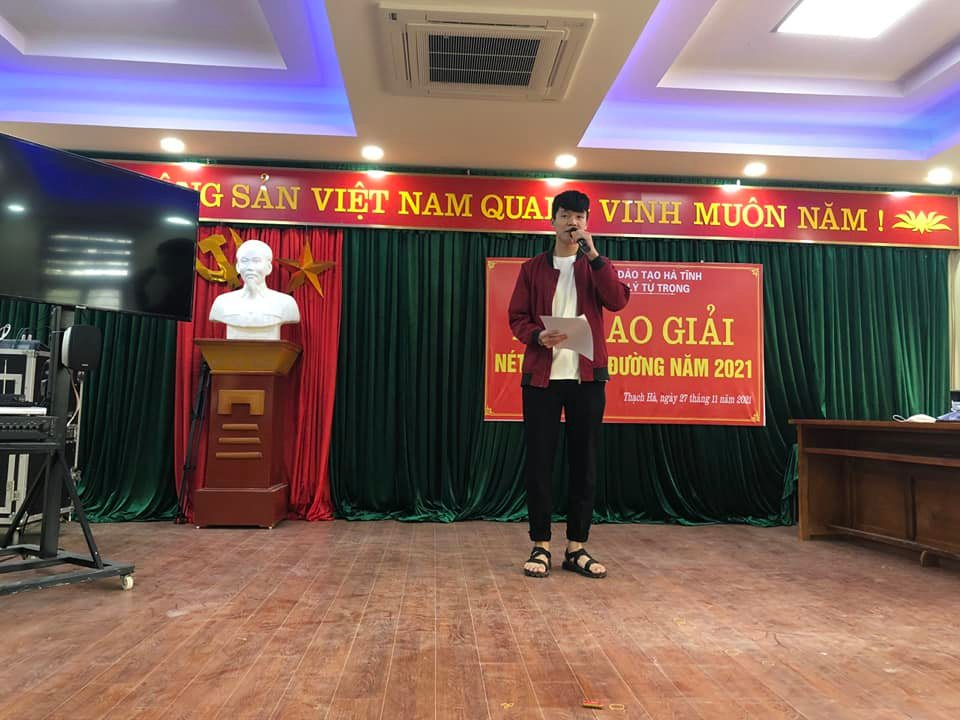
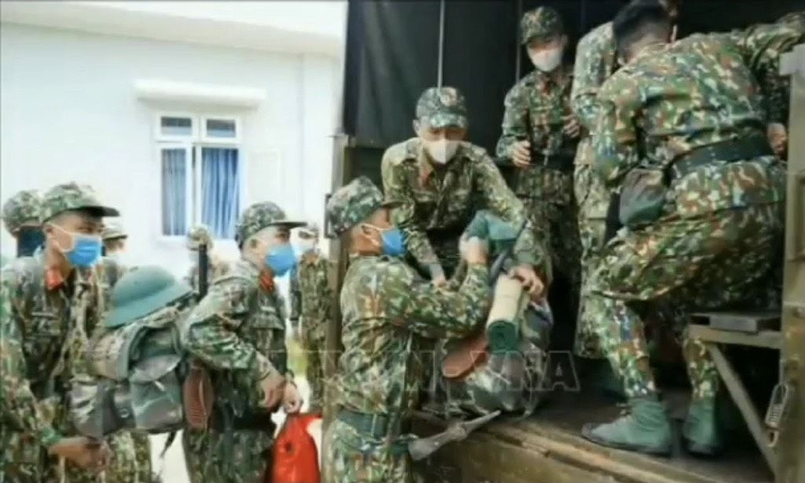

trường thpt lý tự trọng - 55 năm xây dựng và trưởng thành (1966-2021)
01/09/2021 - 22:43

trường thpt lý tự trọng - Hội nghị trực tuyến cho giáo viên chủ nhiệm năm học 2021- 2022
01/09/2021 - 11:02

trường thpt lý tự trọng - ra mắt ban truyền thông năm học 2021 - 2022
6 ngày trước

chuỗi chương trình "tết sum vầy - xuân bình an" tại trường thpt lý tự trọng
28/01/2022 - 17:11

trường thpt lý tự trọng - tổ chức hoạt động chào mừng 39 năm ngày nhà giáo việt nam
18/11/2021 - 16:45

hình ảnh anh bộ đội cụ hồ
18 tháng 12 lúc 23:00

tổ hóa - sinh tổ chúc chuyên đề “sức khỏe sinh sản vị thành niên”
21 tháng 12 năm 2021 lúc 15:00

tổ ngữ văn - trường thpt lý tự trọng tổng kết chuyên đề "người lính cụ hồ"
01 tháng 12 năm 2021 lúc 9:57

trường thpt lý tự trọng tổ chức giải thể thao truyền thống lần thứ iv - năm 20 2021
18 tháng 11 năm 2021 lúc 14:45
hành trình về với bảo tàng hà tĩnh - một hoạt động thiết thực và ý nghĩa của trường thpt lý tự trọng
02/01/2022 - 15:09


 Có gì mới và lời khuyên
Có gì mới và lời khuyên  Báo cáo nội dung spam
Báo cáo nội dung spam Số 01-đường Phan Huy Chú-thị trấn Thạch Hà-Hà Tĩnh
Số 01-đường Phan Huy Chú-thị trấn Thạch Hà-Hà Tĩnh